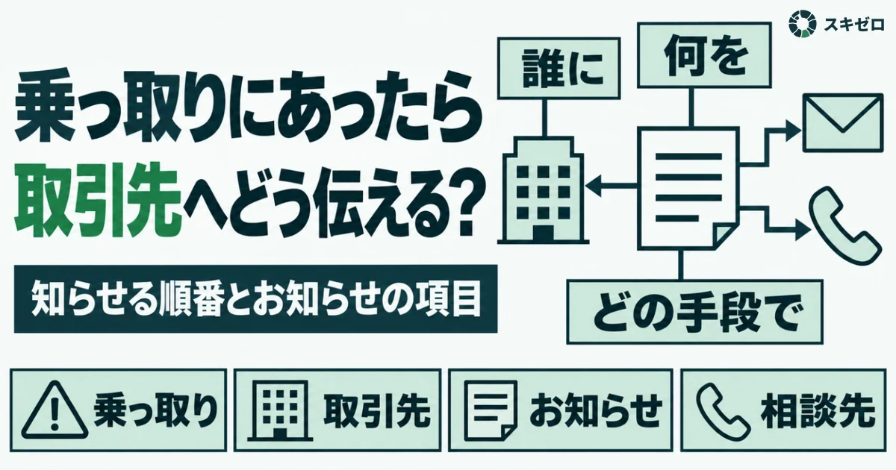
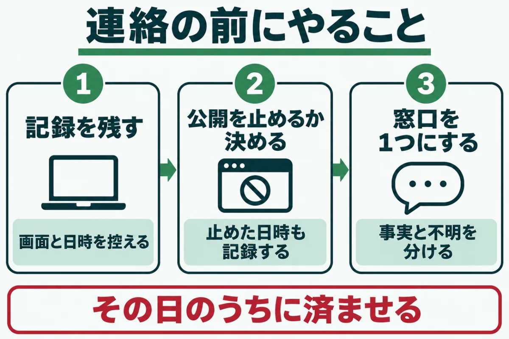
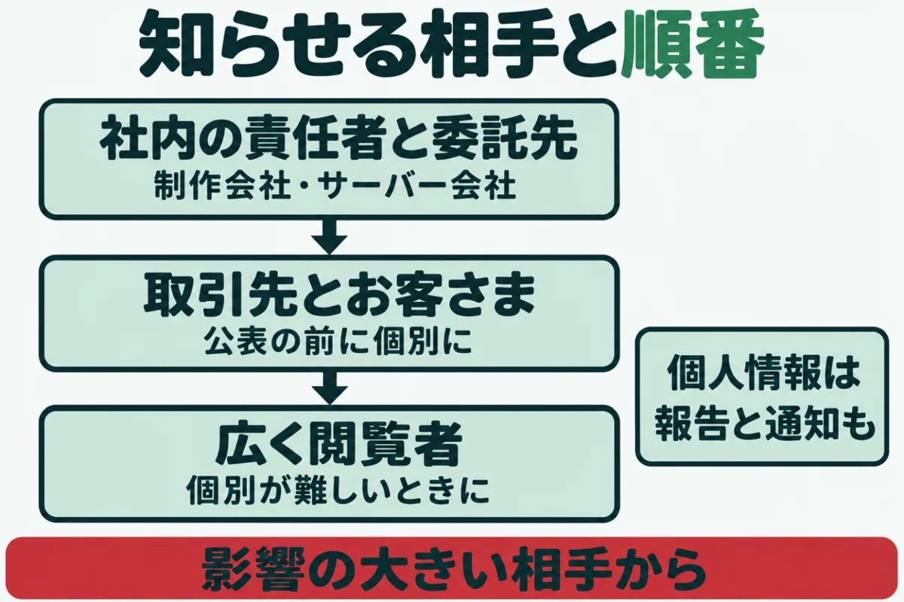
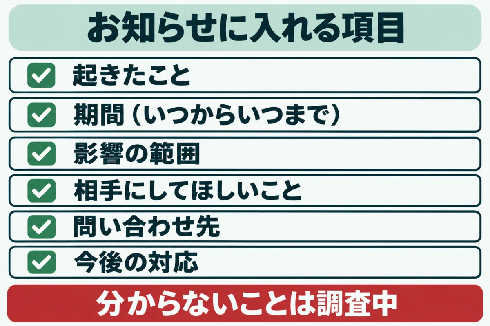
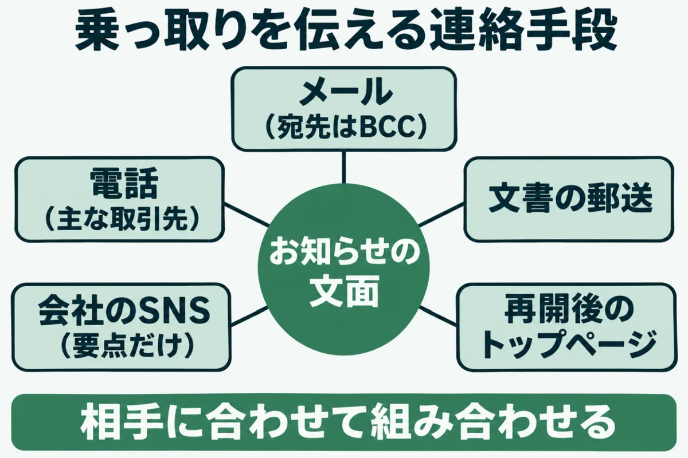
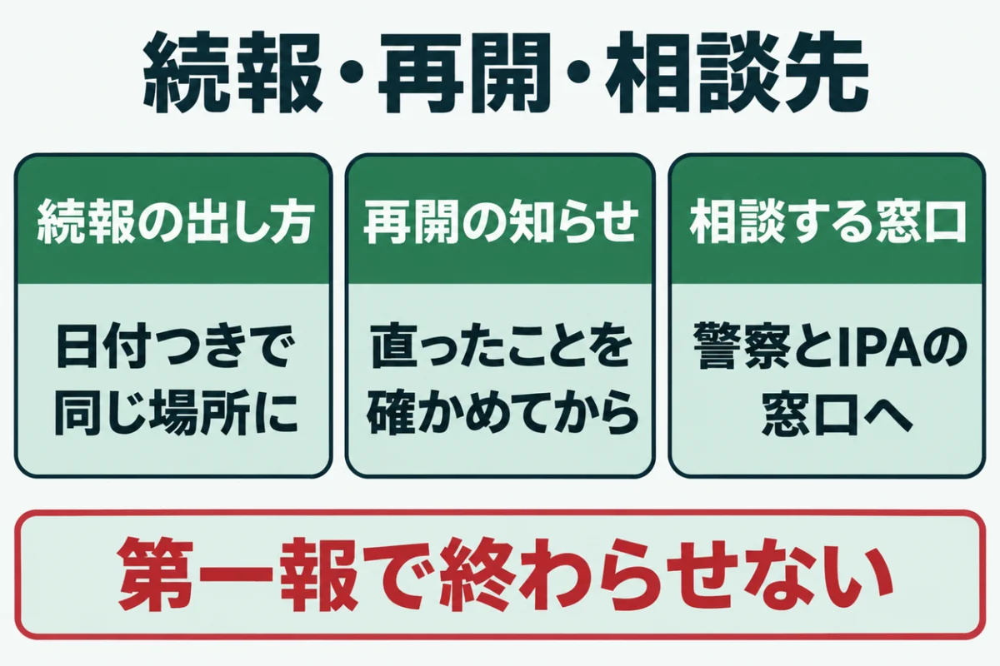

ホームページが乗っ取りにあったら？取引先への連絡のしかた知らせる順番とお知らせに入れる6つの項目

「ホームページが乗っ取られたようだ。取引先には何と伝えればいいのか」と迷っていませんか？
改ざんや不正な転送、管理画面を奪われる被害は、自社の中だけで終わりません。開いた人が偽のサイトへ送られるなど、取引先やお客さまにも影響が及ぶからです。
この記事では、外への連絡を「誰に・何を・どの手段で」の順にまとめました。お知らせに入れる項目と、続報や再開の伝え方も紹介します。
内容は、IPAや警察庁、個人情報保護委員会の公開資料で確かめたものです。復旧の作業は別の記事に分け、外への連絡に絞って説明します。
ホームページの乗っ取りに気づいたら連絡の前にやること

ホームページの乗っ取りに気づいたら、外へ知らせる前に社内で3つを済ませます。記録を残すこと、公開を止めるかの判断、窓口の一本化の順に進めましょう。
先に済ませる理由は、伝える中身が食い違うと相手を混乱させるからです。IPAの手引きも、検知と初動対応のあとに報告と公表を置いています。長い時間はかけず、気づいたその日のうちに進めてください。
画面と日時を記録に残す
最初に、おかしな画面をスクリーンショットで残しましょう。気づいた日時と、誰からどう知らされたかもメモします。取引先やお客さまの指摘で気づいた場合は、相手の連絡先を控えてください。IPAの手引きにも、外部から通報を受けたら連絡先を控えるとあります。この記録が、あとで出すお知らせの土台になるのです。警察庁は、アクセスログを保存して証拠を保全するよう案内しています。記録の残し方は、ホームページ改ざんの復旧手順｜発見から再発防止までで詳しく紹介しました。
公開を止めるかを決める
次に、ホームページの公開を止めるかを決めます。開いた人が別のサイトへ送られる状態なら、被害は広がり続けるでしょう。警察庁は、被害にあったら直ちにサービスを停止するよう案内しています。総務省も、復旧に時間がかかる場合は一時的な非公開を検討するよう勧めました。止めた日時は、お知らせに書く期間の区切りになります。誰の判断でいつ止めたかを、記録に足してください。管理画面に入れないときは、サーバー会社に連絡して止め方を相談しましょう。
連絡の窓口を1つに決める
外への連絡を始める前に、説明する人を1人に決めます。IPAの資料は、情報を一か所に集めて窓口を一本化するよう勧めているのです。憶測や不確かな情報に基づく発言は混乱を招く、という理由でした。分かった事実と、まだ分からないことを分けて書き出しましょう。担当者が1人の会社でも、社長や責任者にはすぐ報告してください。制作会社に頼む作業と、自社で行う連絡も分けておきます。役割が決まると、問い合わせへの答えがぶれません。
ホームページの乗っ取りを知らせる相手と順番

ホームページの乗っ取りを知らせる相手は、影響が大きい相手から順に並べて決めます。全員へ同時に同じ文を送ろうとすると、最初の連絡が遅れるからです。
順番の目安は、社内と委託先、影響を受けた取引先とお客さま、広く閲覧者の順になります。個人情報が関わる場合は、国への報告と本人への通知も加わるのです。相手を紙に書き出してから動きましょう。
社内の責任者と制作会社・サーバー会社に知らせる
最初に知らせる相手は、社内の責任者です。IPAの手引きは、責任者が判断して速やかに経営者へ報告する流れを示しています。経営者は、責任者と担当者を決めて役割を分ける立場です。あわせて、制作会社とサーバー会社にも連絡しましょう。止める作業と調べる作業を頼む相手だからです。伝える内容は、気づいた日時、見えている症状、すでに行った操作の3つになります。受付や営業の担当にも、問い合わせは窓口へ回すよう伝えてください。
影響を受けた取引先とお客さまに個別に知らせる
次に、影響が及んだおそれのある相手へ個別に知らせます。乗っ取られていた期間にホームページを開いた相手や、フォームを使った相手です。IPAの資料は、一般への公表より先に関係者への通知を考えるよう勧めています。取引先の情報が関わる場合は、取引先に報告して意向に沿うという考え方でした。個別に連絡できる相手には、公表の前に直接伝えましょう。ほかの人から先に聞くと、相手は不安を強めます。相手が多くて個別の連絡が難しいときは、広く閲覧者に向けたお知らせを出してください。
個人情報が関わるときは報告と本人への通知が加わる
フォームなどで個人情報を扱っていた場合は、対応が1段増えます。個人情報保護委員会への報告と、本人への通知が必要になる場合があるからです。委員会は、改ざんで入力された個人情報が第三者に送られた場合を例に挙げています。漏れたおそれがある段階でも対象になる点に気をつけてください。2026年7月17日に改正法が公布され、政令や規則の検討が続いています。報告の前に、委員会の最新の案内を確かめましょう。ホームページから個人情報が漏れたら？会社がすべきこと｜報告が必要な4つの場合と最初の動き方も見てください。
ホームページの乗っ取りのお知らせに入れる項目

ホームページの乗っ取りのお知らせには、事実と、相手にしてほしいことを書きます。お詫びの言葉だけでは、受け取った相手が次に何をすればよいか分かりません。
入れる項目は6つです。IPAの資料にある公表用の項目の例を土台にしました。会社名や数字を入れた文例は、あえて載せていません。自社で確かめた事実を、表の項目に当てはめて書いてください。
起きたこと・期間・影響の範囲を事実で書く
最初に書く内容は、何が起きたかです。「改ざんされた」「別のサイトへ転送されていた」など、確かめた事実を短く書きます。期間は、始まったと見られる日時から公開を止めた日時までです。影響の範囲には、どのページで起きたかを書きましょう。個人情報が関わるかどうかも、同じ場所に入れてください。分かっていないことは「調査中」と書くのが基本になります。推測で書くと、あとで説明が変わってしまうからです。入れる項目を、表にまとめました。
| 項目 | 書く内容 |
|---|---|
| 起きたこと | 改ざん、別のサイトへの転送など、確かめた事実 |
| 期間 | 始まったと見られる日時から、公開を止めた日時まで |
| 影響の範囲 | 影響したページ、個人情報が関わるかどうか |
| 相手にしてほしいこと | 端末の検査、不審なメールや電話への注意など |
| 問い合わせ先 | 電話番号、メールアドレス、受付の時間 |
| 今後の対応 | 行った対応、調査の状況、次に知らせる予定 |
相手にしてほしいことと問い合わせ先を書く
お知らせでいちばん役に立つ部分は、相手が取る行動です。たとえば、期間中にホームページを開いた人には、端末のウイルス検査を勧めます。警察庁も、改ざんされたサイトを見た人がウイルスに感染するおそれを挙げているのです。フォームに入力した人には、不審なメールや電話への注意を伝えましょう。問い合わせ先は、電話とメールの両方を書いてください。電話だけでは、受付の時間外に届いた声を拾えません。受付の時間と担当の部署も添えると、相手が迷わずに済むでしょう。
お詫びと今後の対応を添え、原因は確かめた範囲で書く
IPAの資料は、公表用の項目の例に、お詫びと会社の姿勢を伝える序文を挙げています。事故の原因、当面の対応策、再発防止策も並んでいました。ただし、第一報の時点で原因まで分かっているとは限りません。原因は、確かめた範囲だけを書きましょう。くわしい経路は、続報に回してかまいません。行った対応と、次にいつ知らせるかを書くと相手は見通しを持てます。弱点の細かい説明は、ふさぎ終えるまで控えてください。IPAも、公表が被害を広げるおそれがあるときは時期や対象を考慮するとしています。
ホームページの乗っ取りを伝える連絡手段

ホームページの乗っ取りは、ホームページ以外の手段でも伝える必要があります。止めている間は、ホームページにお知らせを載せても読んでもらえないからです。
手段は、メール、電話、文書、SNSなどを相手に合わせて組み合わせましょう。個人情報保護委員会も、本人への通知の方法の例に文書の郵送と電子メールを挙げました。平時から、ホームページが使えないときの知らせ方を決めておくと安心です。
取引先にはメールと電話を組み合わせる
取引先への連絡は、メールで文面を送り、主な相手には電話も添えます。メールは記録に残り、電話はすぐに届くからです。送る前に、メールがホームページと同じサーバーにあるかを確かめてください。同じ場所にある場合は、メールのパスワードも変えてから送りましょう。一斉に送るときは、宛先をBCCに入れます。個人情報保護委員会は、CC欄に入れて一括送信した場合を漏えいの例に挙げました。お知らせの連絡が、新しい漏えいにならないよう気をつけてください。
ホームページが使えないときの知らせ場所を決める
ホームページを止めている間は、別の場所にお知らせを出します。会社のSNSの公式アカウントなどが候補です。原因が分かる前に、代わりのサイトを急いで立ち上げるのは避けてください。IPAの資料は、原因や経路を特定せずに立ち上げると再び侵入されやすいとしています。再開したあとは、トップページか、そこからリンクした場所に載せましょう。お知らせの場所を、あちこちに分けないことが大切です。SNSには要点だけを書き、くわしい内容は1か所にまとめます。更新した日時も書いてください。
問い合わせを受ける窓口と答え方を用意する
お知らせを出すと、問い合わせが届きます。IPAの手引きは、顧客や消費者に関係する場合に専用の問い合わせ窓口を開くよう示しました。被害が出たり広がったりしたときに、動きを早くつかむためです。答え方の基本の文を、先に書いておきましょう。聞かれやすい内容は、原因、影響の範囲、自分は何をすべきかの3つです。答えられない質問には、その場で無理に答えません。IPAの資料も、取材への対応について、確認のうえ追って回答するよう勧めています。受けた問い合わせは、日時と内容を記録に残してください。
ホームページの乗っ取りの続報と再開の知らせ、相談先

ホームページの乗っ取りの連絡は、第一報のあとの続報と再開の知らせまで続きます。最初のお知らせだけで終えると、相手は今どうなっているのかが分かりません。
IPAの手引きは、第二報以降と最終報で、対応の状況や再発防止策を報告するよう示しています。あわせて、警察やIPAなどの窓口にも早めに相談しましょう。連絡と相談は、同時に進めてかまいません。
続報は日付をつけて同じ場所に出す
調査が進んだら、分かったことを続報で知らせます。新しいお知らせを別々に出すより、同じ場所に日付つきで足すほうが親切でしょう。第一報で「調査中」とした項目を、1つずつ埋めていく形です。IPAの手引きは、影響を及ぼした取引先や顧客への報告を挙げています。次にいつ知らせるかを、毎回書いてください。最終報には、原因と再発防止策を書きます。問い合わせ窓口をいつまで開くかも添えましょう。個別に連絡した取引先には、続報も個別に届けてください。
再開の知らせは、直ったことを確かめてから出す
公開を再開するのは、原因をふさぎ、正しく直ったことを確かめたあとです。IPAの手引きも、正しく修復できたことを確認してから復旧するとしています。警告が出ていた場合は、Search Consoleも確かめましょう。Googleのヘルプによると、すべて直してから審査をリクエストする流れです。再審査は、数日から数週間かかることが多いという説明でした。警告が外れたのを確かめてから、再開を知らせましょう。「このサイトは危険です」と警告が出たときの対処｜原因の確かめ方と解除までの流れも見てください。
警察とIPAなどの窓口に相談する
乗っ取りの被害は、早めに警察へ相談しましょう。警察庁は、アクセスログなどの資料を持って警察署か相談窓口へ行くよう案内しています。事前に電話で日時と資料を調整すると、話が早く進むという説明です。オンラインの受付窓口もあり、通報、相談、情報提供を受け付けています。技術的な初動の相談先は、IPAの企業組織向けサイバーセキュリティ相談窓口です。応急処置の助言や、専門業者の一覧の紹介を受けられます。JPCERT/CCも、Webフォームとメールで対応の依頼を受け付けている窓口です。
URLを入れるだけで、WordPressやPHPの版、ログイン名の見え方など8項目を無料で判定します。見つかった弱点をふさぐ作業は、対策作業（14,800円から・税込）でもお受けしています。
無料で診断するホームページの乗っ取りの連絡に関するよくある質問
被害の全体がまだ分からない段階でも、取引先に知らせるべきですか？
影響が及んだおそれがある相手には、早めに知らせるのが基本です。IPAの資料も、なるべく早く公表することを考えるとしています。分かっている事実と、調査中のことを分けて伝えれば問題ありません。ただし、知らせることで被害が広がるおそれがある場合は別です。IPAは、その場合に時期や対象を考慮するよう勧めています。迷うときは、制作会社や相談窓口の助言を受けてから決めましょう。
お知らせを出すと、かえって信用を落としませんか？
黙っていて、あとから分かるほうが信用を損ねやすいでしょう。IPAの資料は、情報を公開する前提の対応が組織の信頼につながるとしています。公開で被害が広がるような特殊な場合を除く、という条件つきです。お知らせには、事実と行った対応、相手にしてほしいことを書いてください。お詫びだけの文より、次の行動が分かる文のほうが相手の役に立ちます。
ホームページを止めている間、お知らせはどこに出せばよいですか？
個別に連絡できる相手には、メールや電話、文書で直接伝えます。広く知らせる場合は、会社のSNSなど、ホームページと別の場所を使いましょう。止めたページの代わりに、お知らせの文だけを表示できる場合もあります。できるかどうかは、サーバー会社や制作会社に確かめてください。再開したら、トップページか、そこからリンクした場所に載せ直します。
取引先から原因を聞かれたら、どこまで答えればよいですか？
確かめた事実だけを答え、分からないことは調査中と伝えます。憶測で答えると、あとで説明が変わり、相手を混乱させるからです。IPAの資料は、取材への対応について、無理に答えず追って回答するよう勧めています。取引先への説明でも、同じ考え方が使えるでしょう。弱点の細かい内容は、ふさぎ終えてから伝えてください。いつまでに答えるかを伝え、続報で果たすことが大切です。
制作会社に任せている場合も、連絡は自社で行うのですか？
取引先やお客さまへの連絡は、自社の名前で行いましょう。相手が取引しているのは、制作会社ではなく自社だからです。制作会社やサーバー会社には、調べた記録と原因の説明を出してもらいます。文面づくりを手伝ってもらうのはかまいません。ただし、説明の窓口は自社の1人にまとめてください。保守契約に、被害が出たときの連絡や対応が書かれているかも確かめましょう。
まとめ
ホームページが乗っ取られたら、記録を残し、公開を止めるかを決め、窓口を1つにします。そのうえで、影響の大きい相手から順に知らせてください。
お知らせには、起きたこと、期間、影響の範囲、相手にしてほしいことを書きます。問い合わせ先と今後の対応も添え、続報と再開の知らせまで続けましょう。
まずは、今の状態を知るところから。
URLを入れるだけで、数十秒で判定が出ます。登録はいりません。